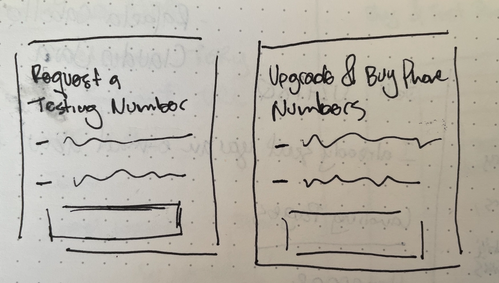
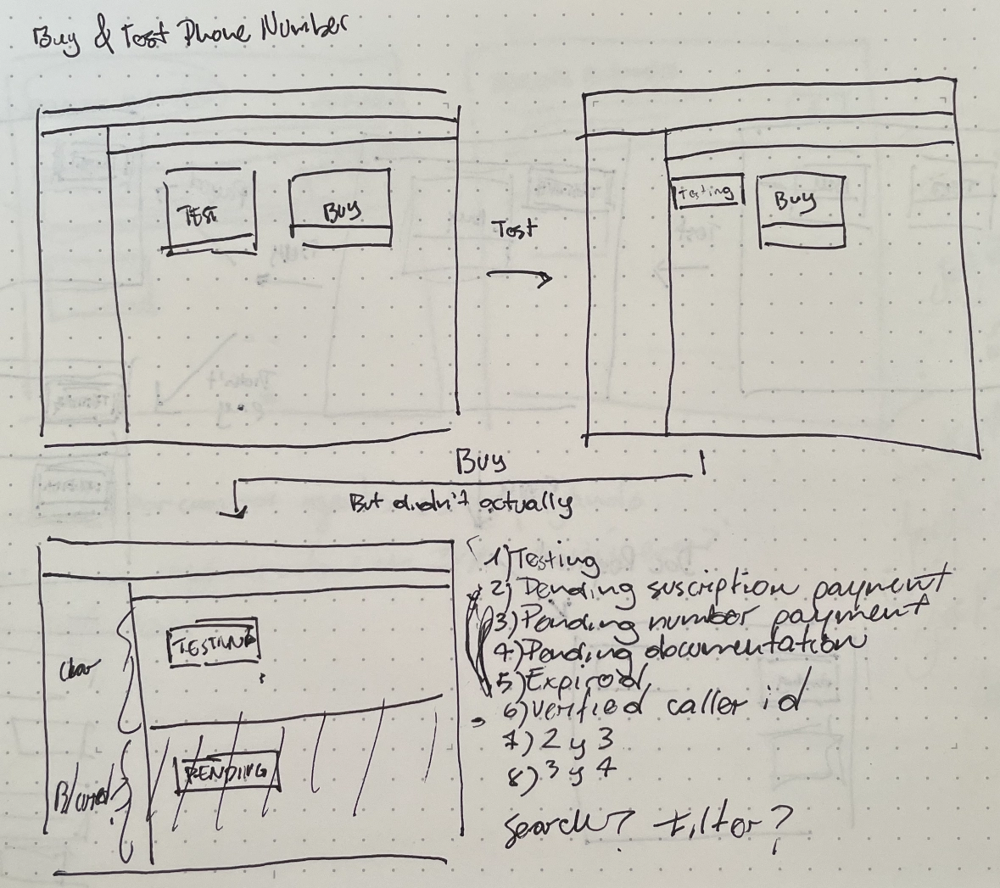
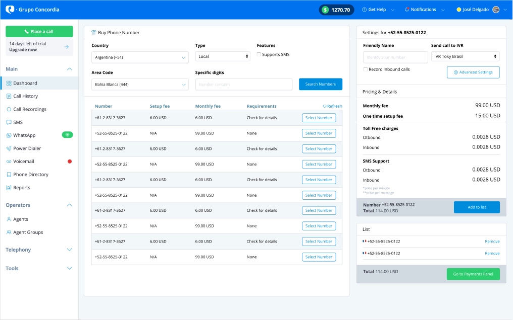

Toky Number Purchase Funnel
Role: Product Designer
When: March 2019
The problem
For every new Toky account there was always the need to set up a testing phone number to test the full Toky feature set, this was done via support, and there wasn’t a way for customers to monitor their request once they’ve made it.
Moreover, number purchases were also done via support request. Customer had no idea of all the features and countries they could purchase numbers from.
The goal
Although our support team was amazing at handling this requests, we were growing fast, and it was time for an automated customer-facing purchase flow.
Research
It was a race against the clock so we went through our customer support tool and looked for keywords that would tell us the stories about the problem we were trying to solve, getting quotes like:
“I can’t be waiting 2 days to start testing my account”
“I don’t know which countries I can buy numbers from, how am I supposed to test this with my customers?”
We were sure which scenarios to build for, so we went through our competitors and saw how they did things, competitors such as: Twilio, Aircall, Talkdesk.
Proposed Solution
We now knew that the flow should both include the testing numbers and give the ability to purchase a phone number permanently once you’ve tested all the features that were of important to your business.

2 contexts, for testing and to purchase

Scenarios, what happens when you’ve already asked for a number?
We also knew that we had to take advantage of the payment infrastructure that we already built, so we had to start our funnel with:
- A recently converted customer, and finish up when they want to get a test number
- A customer that already did their testing and wants to get one or more phone numbers for their account
- A customer that was already using the platform fully, and wanted to get some more phone numbers based
on criteria such as:
- Country
- Features (SMS, MMS, Toll-Free)
- Price
Final Mockup

Last iteration of the Number Search & Purchase Screen
With all that we’ve learned, we were able to streamline all the dependencies and put together a screen that allowed the customer to search & purchase numbers with basically zero friction, whenever they wanted.
Business Impact
It’s kind of obvious but if you make a purchase process fast and easy enough, customers will come flying. Even a month after we implemented this flow the phone number sales doubled, with a plus percentage every month for the next 6 months before it stabilized.
Even though we realized the potential of phone numbers as a revenue stream this exceeded our expectations by quite a large margin. This was the first time I saw how impactful a good idea and hard work could have on a product, and how much difference it can make to a hard metric like revenue.